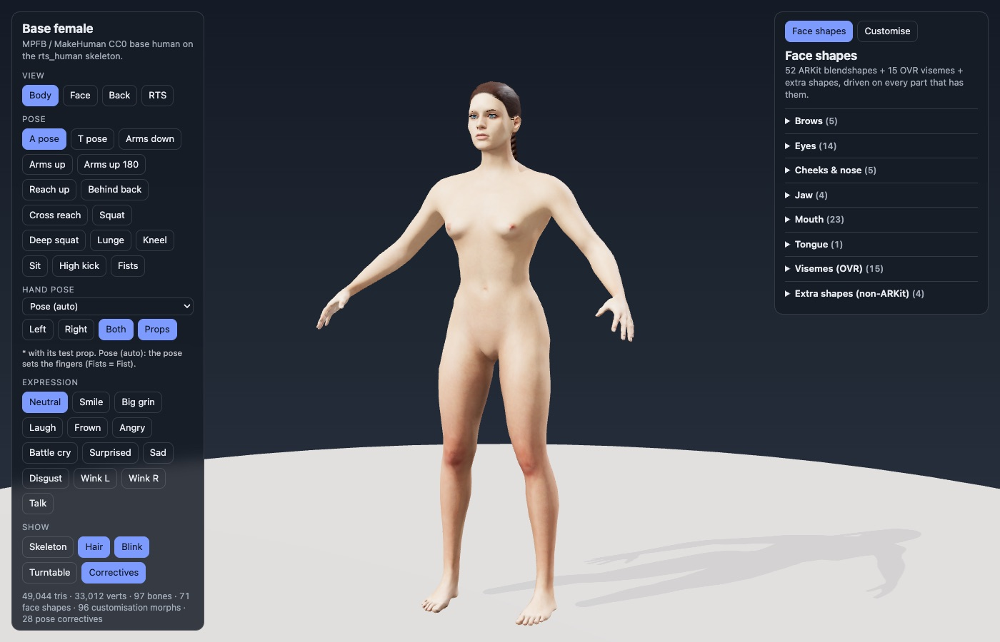
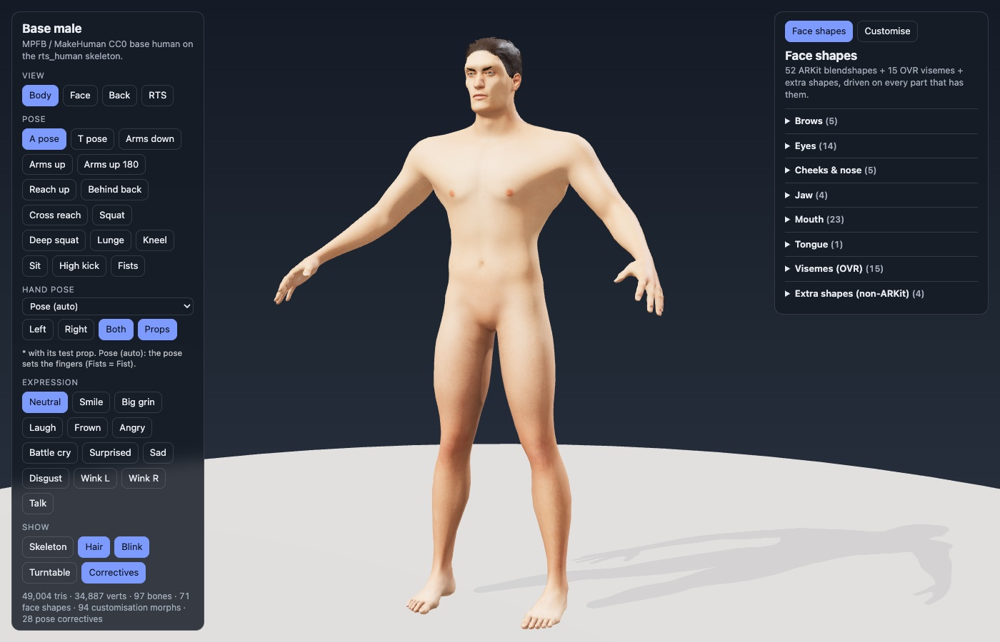
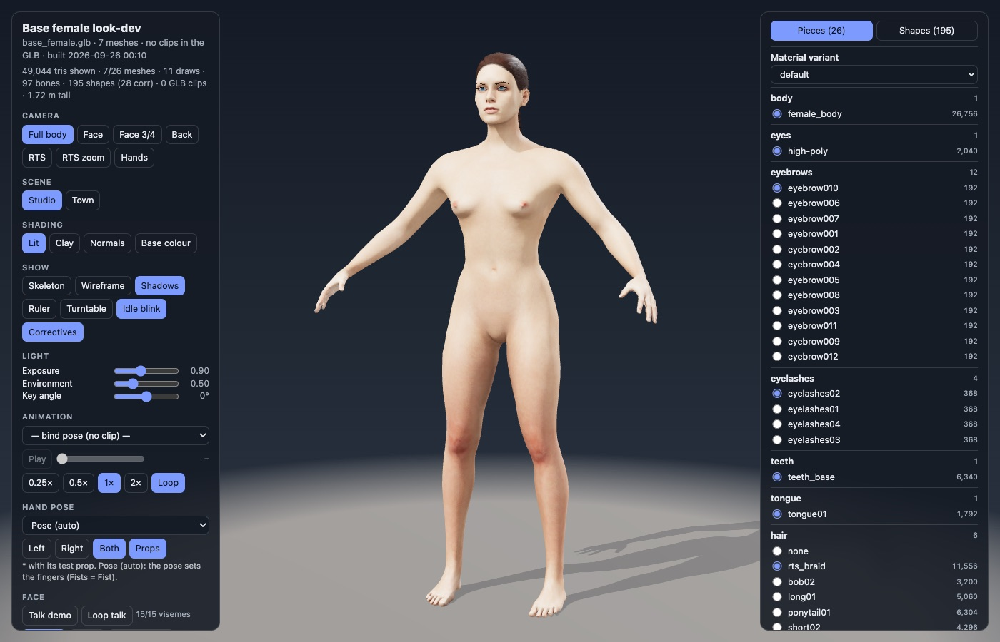
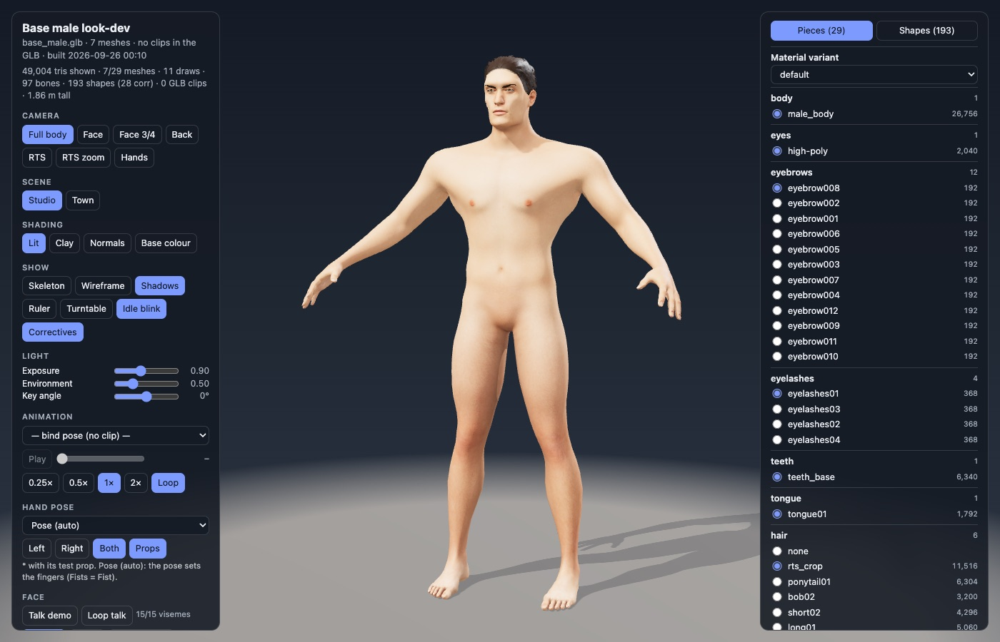

RTS Characters
Work-in-progress rigged human characters for a fantasy real-time strategy game: male and female base bodies on one shared game skeleton, with facial expressions, ARKit-style face shapes and visemes, customisation sliders, hair and brow options, poses, hand grips and animation clips. Everything runs in your browser.
Character pages
Customise the face and body, switch hair, brows and lashes, try expressions, poses and hand grips.


Look-dev pages
Animation clips with play and scrub, every face shape and viseme, hand grip presets, lighting and shading modes.


Using the viewers
- Each page carries its whole model, so the first load downloads 66-83 MB; give it a moment on slower connections.
- Drag to orbit, right-drag to pan, scroll to zoom. A current Chrome, Edge, Firefox or Safari works best.
- Character pages: Customise and Randomise for the face and body sliders, the expression buttons (Smile, Wink, Talk...), the pose buttons (Squat, Lunge, Kneel, Sit, Fists...) and the hand-pose menu (sword, hammer, knife, bow grips...).
- Look-dev pages: the Animation menu, Hands camera, lighting and shading modes, and the Shapes tab for every face shape.
Work in progress
- Hair is an early version: card edges and scalp gaps show up close, and the female braid is rough. A rebuilt hair set is on the way. On the character page, switching away from the braid may leave it visible.
- The hand grips are new; some finger contacts are still being tuned.
- The armoured knight and the other outfits (archer, peasant, mage) are being rebuilt and are not in this preview yet.
What comes from MakeHuman, and what is ours
The bodies start from the free (CC0) MakeHuman base assets, loaded with the MPFB Blender add-on at build time. The body mesh keeps MakeHuman's topology (armour and clothes are fitted to it); its shape comes from MakeHuman's own sliders at values we chose. Everything that turns it into a game character is built by our pipeline.
| Area | From MakeHuman (CC0) | Built by us |
|---|---|---|
| Body mesh | Base mesh and topology; shape from its sliders (gender, muscle, weight, proportions, face targets) | The chosen settings, pose-driven corrective shapes (shoulders, armpits, groin, elbows), reworked skin weights, body split into 18 regions for armour |
| Rig | Joint placement and skin weights of the default MakeHuman rig | 97-bone game skeleton (engine-style hierarchy, twist and helper bones, face rig), shared male/female rest pose, foot-contact solver, hand-grip library |
| Face | ARKit 52 face shapes and 15 visemes (community packs by Mika Suominen) | Fixes (eye sockets, closed lids, wink, brows and lashes following the lids, lip seal), expression presets, talk demo |
| Customisation | Raw face and body targets | Two-way sliders, carried onto every part (brows, lashes, hair, clothing), skeleton refit for extreme shapes |
| Parts | Eyes, 12 eyebrow styles, 4 lash sets, tongue, the bob / long / ponytail / short hair styles | 28-tooth dentition and gums, eyeball + clear cornea split, crop and braid grooms, beards, a new hair system in progress |
| Skin | Base skin colour textures | Normal maps from a subdivided body, pores, roughness, ambient occlusion, grading, skin-tone variants |
| Clothing and armour | MPFB's fitting mechanism (pieces follow body shapes and inherit skin weights) | All the geometry, materials and heraldry (knight, archer, peasant), plus automated fit and intersection checks |
| Animation and poses | None | All clips, poses and grips |
| Export and viewers | None | glTF export and validation, QA tools, these viewer pages |
Source
The pipeline that builds these characters is in source/:
headless Blender scripts on top of MPFB and the CC0 MakeHuman assets, plus the web viewer templates. See the README there.